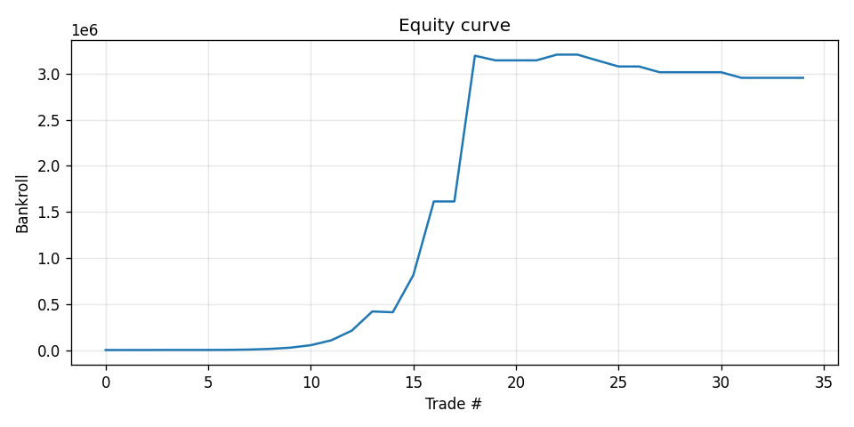
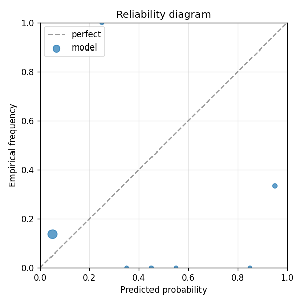

Model A baseline for the dual A vs B PoC on broader entertainment Polymarket markets. Unifies ALL resolved (closed) entertainment markets across tags: oscars, emmys, golden-globes, grammys, baftas, sag-awards, critics-choice-awards, cannes, venice, berlin, sundance, box-office, movies, tv, streaming. Each market is one yes/no prediction at resolution. Features: Polymarket closing price (lastTradePrice clipped to [0.02, 0.98]) + market volume + market liquidity + days_open. No text. p_market = the Polymarket closing implied probability itself, so any edge over the closing line shows up as Brier improvement. Compare to polymarket-entertainment-B (same data, same model class) which adds Voyage-embedded haiku-scraped entertainment commentary per event_slug.
| metric | value |
|---|---|
| brier_model | 0.2521903226389547 |
| brier_market | 0.3712342857142857 |
| brier_improvement | 0.119043963075331 |
| accuracy_model | 0.7142857142857143 |
| accuracy_market | 0.5714285714285714 |
| n_events | 35 |
| n_trades | 24 |
| hit_rate | 0.5833333333333334 |
| gross_return | 2953.987553346322 |
| net_return | 2953.987553346322 |
| sharpe | 1.6646051054358033 |
| max_drawdown | -0.07857267191124605 |
| label_shuffle_brier_improvement | null |

